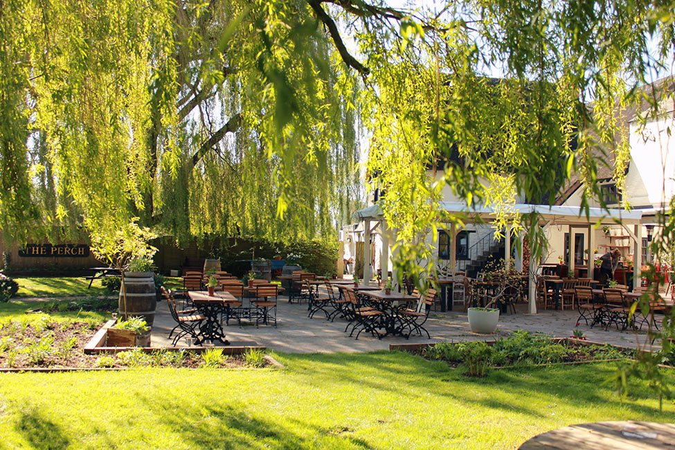
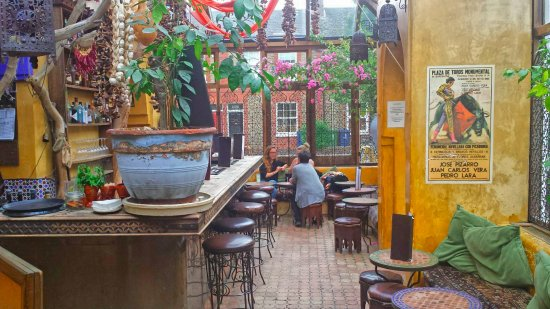

10 best beer gardens in Oxford
August 9th, 2018
If you are passing by Oxford as a tourist, a visiting student or have already been living there for a while, you cannot miss the enthralling excitement happening around the many bars and pubs scattered in the city. There are especially a significant selection of front and back gardens which offer the perfect place to drink a pint or a glass of Pimm's. I hope you'll love my an hand-curated list of the most thrilling beer gardens one can find in The City of Dreaming Spires!
The Plough - Port Meadow
Situated north-east of Port Meadow, The Plough is a well-known stopover for people walking or riding through the meadow. One instantaneously feels miles away from Oxford thanks to the greenery and quietness. Definitely a great spot for families seeking a place to eat & drink while leaving the children in the playground. The food can be surprisingly good, depending on the (changing) menu.
The Green, Upper Wolvercote, Oxford OX2 8BD. theploughoxford.co.uk.The Perch - Port Meadow
The Perch is one of Oxford’s oldest pubs, close to the Isis and overlooking Port Meadow. In the summer, their garden is the envy of the whole city, and the 17th century plaster-rubble building with its traditional thatched roof will charm even the most seasoned pub-goers. The Perch was even frequented by author Lewis Carroll, where he gave public readings of Alice in Wonderland. If you keep walking northward along the Isis, you'll eventually come across the Trout Inn and then Jacobs Inn which are worth going due their picturesqueness.
Binsey Ln, Binsey, Oxford OX2 0NG. the-perch.co.uk.The Victoria - Jericho

Situated in Jericho, The Victoria has a front terrace which is one of the best spot to enjoy a Pimm's till the sunset. It is also well known by whisky connoisseurs for having a large choice of spirits. The Victoria definitely pays tribute to food lovers and British gastronomy (if such thing exists) since amazing pies are served with classic British chips: I personally recommend the white truffles and spinach one. The back garden is also very enjoyable during spring and summer time. Beware for those who dislike taxidermy, there is a significant collection of those!
90 Walton St, Oxford OX2 6EB. victorianpub.co.ukThe Turf Tavern - City center

The Turf Tavern is definitely one of the historic pubs in Oxford, and its well-hidden location makes it even more iconic. Oxford and Brookes Uni students spend lots of time in the three outdoor courtyards (with braziers in winter) enjoying their great choice of drinks. It has been frequented by many famous personalities, such as Bill Clinton who infamously did not inhale marijuana during an event there. After exams you may also come across students celebrating by trying to beat the former Australian Prime Minister Bob Hawke at drinking a Yard of Ale - who set a Guinness World Record in 1963 by drinking 1.4L in 11s.
4-5 Bath Pl, Oxford OX1 3SU. https://www.greeneking-pubs.co.uk.Angel & Greyhound - Cowley

The Angel & Greyhound is situated between St Clement's street and the eponymous meadow. It has a front terrace on the former side and a charming patio garden (with a véranda) on the latter side. A good selection of beers, wine and dishes is offered. It's a great place to play pool and board games with friends.
30 St Clement's St, Oxford OX4 1AB. angelandgreyhound.co.ukPort Mahon - Cowley
Also situated in St Clement's street, The Port Mahon is a quite quiet pub, unless you happen to go on a Sunday evening during the famous (and hard) pub quizz! It features a back garden including some leather sofas which I believe have been perfectly designed to fling oneself before having drinks and smokes with friends.
82 St Clement's St, Oxford OX4 1AW.The Star - Cowley
A bit hidden on Rectory Rd (just off of Cowley Rd), The Star definitely reflects the spirit of East Oxford people love. The decent sized rear beer garden features proper grass, which makes it a perfect place to spend a summer evening. There is also a generous amount of seating inside and two pool tables.
21 Rectory Rd, Oxford OX4 1BU.Cowley Retreat - Cowley

In the crux of East Oxford, the Cowley Retreat is the general quarters of many students. How could one shunt its lively back terrace ? Nicely decorated with fairy lights, along with great music, spending the evening there gives you the best odds to spend a cheerful night!
172 Cowley Rd, Oxford OX4 1UE. thecowleyretreat.comThe Rusty Bicycle - Cowley
Refurbished & reinvented in 2009, the Rusty Bicycle is now one of the fer de lance pubs of East Oxford's spirit. You'll love spending your Sunday mornings in its nice garden, trying each of the breakfast menu item. I personally recommend the mighty veggie for its amazing cheddar+leer fritters. The front terrace is also perfect to have a pint with friends while enjoying the neighbourhood's atmosphere. The founders also refurnished two other pubs: the The Rickety Press in Jericho and The Bottle Of Sauce in Cheltenham, forming the DODO PUB CO.
28 Magdalen Rd, Oxford OX4 1RB. therustybicycle.com.Isis farmhouse - Iffley Lock

You cannot miss this pub during your riverside walk (or ride) southward along the Isis since it's the first pub you'll reach, followed by the Kings arms. Just over a mile south of Oxford City Centre, it's huge garden will delight everyone, from families to lonely readers. I highly recommend the weekly gypsy and swing jazz concerts on most Sunday mid-afternoon. Seating next to the fireplace while reading a great novel and drinking a pint of ale is the best way to spend a rainy British afternoon!
Haystacks Corner, The Towing Path, Iffley Lock, Oxford OX4 4EL. www.theisisfarmhouse.co.uk.Not quite beer gardens, yet...
Kazbar - Cowley
Neither a beer garden, nor a pub, yet this address is definitely worth being in this selection! As soon as you step your foot into the véranda, the charming North African ambiance shall quickly overwhelmed you! The Spanish cuisine with tapas, sangria and cocktails will bring the experience to its paroxysm. The manager is insanely lively and will speak to you in three or four different languages in the same sentence, don't be surprised, that's the Latin spirit! Take the most of the delicious tapas thanks to the half-price discount (on most of the tapas) from Sunday till Thursday, 5pm till 6pm (need to kindly ask the bartender).
25-27 Cowley Rd, Oxford OX4 1HP. http://www.kazbar.co.uk.Vault and garden - City center
Quite an exotic location since it is situated inside the University Church itself! The terrace overviewing the Radcliffe Camera and All Souls College cannot be more marvellous. It is definitely one of the best place to enjoy a cream tea in Oxford; ask for a Lapsang Souchong (Chinese smoked tea) to go with your (fresh out of the oven) scone - the quintessence of a British spring afternoon!
1, Radcliffe Square, University Church, Oxford OX1 4AH. www.thevaultsandgarden.com